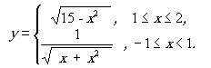
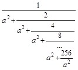

Київський національний університет імені Тараса Шевченка
Факультет інформаційних технологій
Кафедра програмних систем та технологій
студент групи IПЗ-42
Бровенко Вадим
2021
Для выполнения задач был выбран язык программирования Scheme, т.к. он является строго функциональным и прост в освоении благодаря упрощенному синтаксису языка.
Средя разработки была выбрана DrRacket, так как она является бесплатной и имеет понятный и упрощенный интерфейс.
Вычислить значение функции y, разложив функцию y в ряд Тейлора. Аргумент х изменяется от -2 до 2 с шагом 0.5. Определить погрешность:
; =========== zadanie 1 =============
(define (func_1 x sqrt_alt) ; определение первой функции
(sqrt_alt (- 15 (expt x 2))))
(define (func_2 x sqrt_alt) ; определение второй функции
(/ 1 (sqrt_alt (+ x (expt x 2)))))
(define (find_error x func_alt) ; процедура для вычисления погрешности
(display "\t")
(display (abs (- (func_alt x sqrt_taylor) (func_alt x sqrt)))))
(define (sqrt_taylor x) ; вычисление корня разложением в ряд Тейлора
(define (sqrt_iter yn n)
(cond ((= n 5) yn) ; установка точности вычисления
((<= x 0) 0) ; если x <= 0, вернуть 0
(else
(sqrt_iter (/(+ yn (/ x yn)) 2) (+ n 1))))) ; расчет следующего приближения
(sqrt_iter 1 0))
(define (find_funcs current step end) ; процедура для рассчета функция на промежутке
(cond ((and (>= current 1) (<= current 2)) ; если значение в диапазоне от 1 до 2
(display "y1:\t")(display current)(display "\t")
(display (func_1 current sqrt_taylor)) ; расчет 1-ой функ-ции используя ряд Тейлора
(display "\t")
(display (func_1 current sqrt)) ; расчет 1-ой функ-ции используя встроенную ф-цию
(find_error current func_1) ; расчет погрешности для 1-ой функции
(newline))
((and (>= current -1) (< current 1)) ; если значение в диапазоне от -1 до 1
(display "y2:\t")(display current)(display "\t")
(cond ((= 0 (sqrt_taylor (+ current (expt current 2)))) ; проверка подкорневого выражения
(display "division by zero\t")
(display (func_2 current sqrt)) ; расчет 2-ой функ-ции используя встроенную ф-цию
(display "\t\t\tnot defined")
(newline))
(else
(display (func_2 current sqrt_taylor)) ; расчет 2-ой функ-ции используя ряд Тейлора
(display "\t")
(display (func_2 current sqrt)) ; расчет 2-ой функ-ции используя встроенную ф-цию
(find_error current func_2) ; расчет погрешности для 2-ой функции
(newline)))))
(cond ((< current end) ; если текущее значение меньше конечного
(find_funcs (+ current step) step end))) ; то вычислить функции для следующего значения
)
(display "Лаб.2 задание 2.1:")
(newline)
(display "Func\tx\tsqrt_taylor\t\tsqrt_build\t\terror")(newline)
(find_funcs -2 0.5 2)
Как показано на скриншоте, при заданном промежутке от -2 до 2 с шагом 0.5, выполняется расчет для двух функций, выведены результаты с помощью созданной функции, которая вычисляет по ряду Тейлора и результаты встроенной функции sqrt. При выставленной точности 10^-5 есть небольшая погрешность расчетов.
Вычислить конечную цепную дробь, задав значение a при вызове функции:
; =========== zadanie 2 =============
(define (fraction a) ; процедура конечной цепной дроби
(fraction_step a 0)
)
(define (fraction_step a pow-of-two) ; процедура для пошагового вычисления
(define max-pow-of-two 8) ; максимальная степень двойки в числителе
(cond ((= pow-of-two max-pow-of-two) ; при достижении последнего элемента дроби
(/ (expt 2 max-pow-of-two) (expt a 2))) ; вычислить его
(else (/ (expt 2 pow-of-two) ; иначе перейти к следующему элементу
(+ (expt a 2) (fraction_step a (+ pow-of-two 1)))))))
(display "Лаб.2 задание 2.2:")
(newline)
(fraction 1)
На скриншоте приве
На скриншоте показан вывод работы процедуры при заданной a=1, если сократить вычисление цепной дроби с a^2 + 256/а^2 до a^2 + 4/a^2, то при ручном подсчете дроби 1/1^2 + 2/1^2 + 4/a^2 получаем 5/7, программа выдает идентичный результат, следовательно при вычислении цепной дробы до 256/а^2 получается верный результат.
В лабораторной работе были реализованы процедуры для решения задач:
При выполнении 1 задачи возникала сложность в понимании условий, а так же в процессе разложения рекурентного соотшения, раскладывая её в ряд Тейлора. В процессе реализации задачи возникала проблема дублирования кода, которая была решена с помощью процедур высшего порядка.